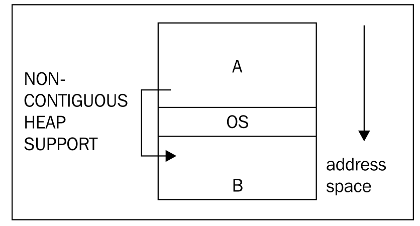
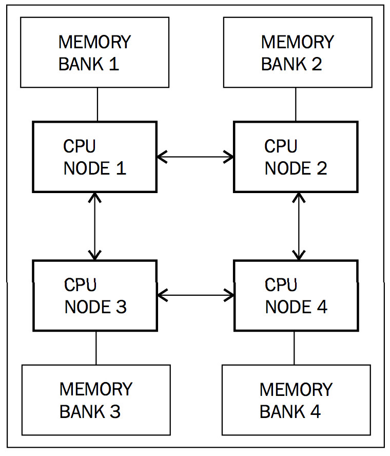

3.4 性能与伸缩性
本节将理论联系实际，看看现实世界中运行时是如何提升内存管理的执行性能的。
3.4.1 TLA
线程局部分配可以用来加速对象的分配过程。一般情况下，如果能在线程局部缓冲区中为对象分配内存是肯定比直接在需要同步操作的堆上分配内存快的。垃圾回收器在堆上直接分配内存时是需要对整个堆加锁的，对于多线程竞争激烈的应用程序来说，这将会是一场灾难。因此，如果每个Java线程能够有一块线程内的局部缓冲区，那么绝大部分的对象分配操作就简单多了，在大多数硬件平台上，只需要一条汇编指令即可完成。这块线程局部缓冲区，就称为 TLA（Thread Local Area）。
为了更好的利用缓存，达到更高的性能，一般情况下，TLA的大小介于16KB到128KB之间，当然，也可以通过命令行参数显式指定。当TLA被填满时，垃圾回收器会将TLA中的内容"提升"到堆中。
当Java源代码中有new操作符，并且JIT编译器对内存分配执行高级优化之后，内存分配的伪代码如下所示：
Object allocateNewObject(Class objectClass) {
Thread current = getCurrentThread();
int objectSize = alignedSize(objectClass);
if (current.nextTLAOffset + objectSize > TLA_SIZE) {
current.promoteTLAToHeap(); //slow and synchronized
current.nextTLAOffset = 0;
}
Object ptr = current.TLAStart + current.nextTLAOffset;
current.nextTLAOffset += objectSize;
return ptr;
}为了说明内存分配问题，在上面的伪代码中省略了很多其他关联操作。例如，如果待分配的对象非常大，超过了某个阈值，或对象太大导致无法存放在TLA中，则会直接在堆中为对象分配内存。JRockit R28引入了 TLA浪费限额（TLA waste limit）来衡量TLA的使用情况，详细情况参见5.6.2.1.6节内容。
在某些包含大量寄存器的架构中，为了达到更高的性能，会将nextTLAOffset的值，甚至是指向TLA的指针的值始终保存在当前线程的寄存器中，而对于像x86这种寄存器数量不多的架构来说，这样做就有些浪费了。
3.4.2 更大的堆内存
实现垃圾回收器的复杂度通常与存活对象集合的大小相关，与堆的大小没什么关系，因此，在存活对象集合不变的情况下，可以让垃圾回收器使用更大的堆内存，这样做能够减缓内存碎片化的趋势，并且能够存储更多的存活对象。
3.4.2.1 32位架构下的4GB内存限制
在32位系统中，内存的最大寻址范围是4GB。4GB是理论上可用的最大内存，但实际上，还有一些其他的东西会占用内存，例如操作系统自身会占用一些内存。而某些操作系统，对于内核和程序库在内存中的排布有非常严格的要求，以Windows为例，它要求内核要位于内存地址空间的中段，这样就没办法将可用内存作为一个完整的连续空间使用。大部分JVM只能将连续内存空间作为堆使用，因此，这就大大限制了堆的大小。
就目前所知，JRockit是目前唯一支持以非连续内存空间作为堆使用的JVM，因此可以充分利用内存空间中被内核和其他程序库分隔开的内存。

在上图中，操作系统内核位于内存地址空间的中段，限制了进程的最大虚拟地址空间。内存区域 A和 B分别位于操作系统所处区域的两边，A比 B的空间稍大一些，因此，对于那些只能使用连续空间作为堆的虚拟机来说，A就是堆的最大容量。如果虚拟机能够有效率用非连续内存空间的话，就可以将区域 A和 B合并为一个整体使用，这种实现的前提假设是内核区域在程序运行时不会发生变动。
随着64位架构的出现，32位架构的使用正逐步减少，但还是有一些场景在大量使用32位架构，例如目前的虚拟化运行环境，在有限的内存中，针对32位平台做大量的性能优化还是很有意义的。
3.4.2.2 64位架构
在64位系统中，由于有了更大的虚拟地址空间可用（即使是运行32位JVM），开发人员无需再耗费精力去思考内存空间被非应用程序的内容占用的问题了。
大部分现代处理器已经是64位架构了，内存寻址范围理论上达到了16EB，这是非常惊人的，目前来看，因成本太高，目前还没有会装备如此巨大内存的机器。
对于自动内存管理来说，64位架构是把双刃剑，有利有弊。在这点上，代码生成从64位架构中得到就全是利，例如更多的寄存器，位宽更大的寄存器和更大的数据带宽。
在64位机器上，指针的长度不再是4个字节，而是8个字节，这需要消耗更多的CPU缓存空间，简单来说就是，解引用一个32位指针的速度会比解引用64位指针快，所以，对于操作同样大小的堆来说，64位版本程序的运行速度会慢很多。
3.4.2.2.1 压缩指针
针对前面提到的问题，一个折中的解决方案是 压缩指针，JRockit首先实现了这个优化策略。如果JVM运行在64位系统上，而且配置的堆小于4GB，很明显，这时候再使用64位指针是得不偿失的，32位指针已经够用，而且还可以加快对象的访问速度。
64位系统中，堆外的本地指针是系统运行时的一部分，仍然是64位的，例如JNI中用于引用Java对象的句柄。在代码中可能需要通过JNI转换，将压缩过的指针地址转换为普通的、系统宽度的地址，或是做反向转换，例如垃圾回收器和本地代码可能会在内部使用本地指针。这个转换过程就称为 指针压缩（reference compression）和 指针解压缩（reference decompression）。
下面是64位平台上压缩/解压缩指针的伪代码，其中堆的基地址可能会在内存空间的任何位置：
CompRef compress(Ref ref) {
return (uint32_t)ref; //truncate reference to 32-bits
}
Ref decompress(CompRef ref) {
return globalHeapBase | ref;
}压缩过的指针是32位的，通过与堆的基地址做or运算可以得出系统具有宽度的64位指针。这种操作的好处是解压缩操作不会改变指针的值，但是由于依赖于压缩指针的长度，所以虚拟机在使用的时候必须能够知晓某个指针是否是被压缩过的。
其实，压缩指针并不仅仅可以用于处理4GB堆的限制问题，还有其它用途。例如，现在堆的大小是64GB，在表示对象指针长度时，不需要使用64位，只用4 + 32位就可以了，具体方法是将64GB的堆划分为16个4GB的分区，然后用4位标明对象处于哪个分区中，再用32位标明对象的偏移地址。这种方式需要额外使用4位来标记对象的分区位置，导致对象的地址只能按16字节对齐，这会浪费一些堆空间，但在执行性能上会有所提升。
CompRef compress(Ref ref) {
return (uint32_t)(ref >> log2(objectAlignment));
}
Ref decompress(CompRef ref) {
return globalHeapBase | (ref << log2(objectAlignment));
}其实，如果对象是以16字节对齐的，并且地址空间从0开始，到64GB结束的话，那么在具体实现指针压缩的时候还有更简单的方法。例如，解压缩指针时将指针的值左移4位即可，相对的，压缩指针时右移4位即可，无需使用堆的基地址参与计算。普通场景下，JRockit采用的就是这种实现方式来维护压缩过的、长度为32位指针。为了便于实现，JRcokit以地址0作为空指针的值，因此，堆中起始的4GB（即低地址方向的4GB）将无法使用，因此可用的堆空间实际上是60GB，虽然有些浪费，但相对于获得的性能提升，这不算什么。但如果对于应用程序来说，这4GB是不可或缺的话，那么就需要考虑使用其他方法了。
上述的实现方式适用于那些堆大于等于4GB的场景，但这种方式有一个缺点，压缩/解压缩的使用顺序和使用次数不再像以前一样不受限制了。
当然，64GB并不是理论上的限制值，只是举例而已，因为已经有基准测试和应用程序实例证明了，对于64GB大小的堆来说，启用指针压缩会获得更高的性能。其实，真正重要的是，启用压缩指针会浪费多少位，以及在此代价下，到底能获得多少性能方面的提升。在某些案例中，使用未经压缩的指针效果更好。
在JRockit R28中，不同配置下，理论上，压缩指针可以支持最大64GB的堆，部分压缩指针框架可以自适应处理。
如果启动JVM时没有指定堆的大小，或者指定的堆小于等于64GB，则会默认启用指针压缩的某个变种。因此，对象对齐的字节数取决于堆的大小。当然，也可以通过命令行参数显式的禁用指针压缩。
译者注，参见下面文章的内容：
就JRockit来说，压缩指针的主要最大化可用堆内存的大小和可存放在L1缓存中的对象数量。为了避免在某些特殊场景下可能出现的问题，JRockit不会对局部栈帧中的指针进行压缩，一般来说，代码生成器会在载入对象域后插入解压缩指针的代码，在存储对象域之前插入压缩指针的代码。尽管这么做会有一些性能损耗，但非常小，几乎可以忽略不计。
3.4.3 缓存友好性
除了内存使用外，垃圾回收器还有其他很多方面要照顾到，其中最重要的一点就是缓存友好性。因为出现缓存大量丢失的情况，应用程序的性能会有大幅下降。
CPU中含有指令缓存和数据缓存（还有其他一些专用缓存），本节将着重介绍数据缓存的问题。缓存中包含有多个 缓存行（cache-line），缓存行是CPU可访问的最小缓存单元。当CPU从内存中获取数据后，会将数据放入到缓存行中，以便将来使用时可以更快的拿到，这样会比从内存中再读取一次快上几个数量级。
CPU的缓存结构通常具有几个层级，第一级速度最快，容量最小，距离CPU最近。在现代处理器架构中，每个CPU核心都有自己的L1缓存，更高层级的缓存就未必是核心独有的了，有可能会被所有的核心共享。L1缓存的容量通常是KB级，L2缓存的容量是MB级。访问L2缓存会比访问L1缓存耗费更多的时间，但仍然会比直接访问内存快得多。
如果能够在CPU使用数据之前，预先将需要的数据从内存抓取到缓存中，就能够减少缓存丢失的情况，但如果抓取到的是无用数据，就会非常影响执行性能。因此，自适应运行时系统在收集了必要的信息后，就能够更好的完成这项工作。
在代码生成阶段，通过收集运行时的返回信息，判断出在访问哪些Java对象时会导致缓存丢失，以此来修正 数据预抓取的准确性。在内存管理系统中，需要关注的主要问题包括对象存放、对齐和内存分配策略。
3.4.3.1 预抓取
使用预抓取策略把即将使用到的数据载入到缓存中，这样，当真正需要用到这些数据的时候，就可以直接从缓存中获取，效率大大提高，不会再出现缓存丢失的问题，而且预抓取的操作可以在CPU做其他工作时并行完成。
通过代码显式的完成预抓取工作称为 软件预抓取（software prefetching）。需要注意的是，现代硬件架构中一般内建有更高级的 硬件预抓取（hardware prefetching），如果内存访问具有符合某种模式或者满足较高的可预测性，硬件自身可以很好的完成自动预抓取工作。
在JRockit中，垃圾回收器的实现也使用了预抓取技术。使用TLA分配内存时，TLA实际上是被划分成很多小内存块（chunk）的，当使用某个内存块时，会预抓取与其相邻的内存块，这样当使用相邻内存块时就可以快速获取到所需数据。
如果能够准确的预抓取到即将使用的数据，就可以使缓存命中，极大的提升整体的执行效率。
这种实现方式的缺点在于，每次将数据载入到缓存时，原先缓存中存储的数据就全被废弃了，太过频繁的预抓取抵消缓存原有的功能。此外，预抓取会读取数据填满缓存行（cache line），这需要花费一定的时间，因此，除非预抓取能够以 流水线（pipeline）方式执行，或者能够与其他操作并行进行，否则预抓取操作还是有一些负面影响的。
3.4.3.2 数据存放
如果能够预知在某段时间内是按顺序或近乎按顺序访问数据，那么预先将可能会访问到的数据放到同一个缓存行中，根据局部性原理，可以获得更好的性能。例如，java.lang.String类中使用字符数组来存储字符串的内容，使用的时候几乎都是按顺序访问的，这种场合就很适合提前将可能会使用到的数据抓取到缓存行中。随着应用程序的运行，内存管理系统获得更多的运行时反馈信息，预抓取数据的准确性也会越来越高。
除了通过运行时反馈信息外，还可以通过获取其他静态信息来预测可能会使用到的数据，例如可以预先抓取某个对象引用到的其他对象，或者某个数组对象中包含的元素。
3.4.4 NUMA架构
**NUMA（Non-Uniform Memory Access，非均匀访存模型）**架构的出现为垃圾回收带来了更多挑战。在NUMA架构下，不同的处理器核心通常访问各自的内存地址空间，这是为了避免因多个CPU核心访问同一内存地址造成的总线延迟。每个CPU核心都配有专用的内存和总线，因此CPU核心在访问其专有内存时速度很快，而要访问相邻CPU核心的内存时就会相对慢一些，CPU核心相距越远，访问速度越慢（也依赖于具体配置）。传统上，多核CPU是按照 **UMA（Uniform Memory Access， 均匀访存模型）**排布的，所有的CPU核心按照统一的模式，无差别的访问所有内存。
目前，高端服务器所使用的两种NUMA架构分别是AMD Opteron系列和Intel Nehalem系列。
下图展示了NUMA架构下CPU核心的配置示例：

上图中，CPU核心，或称NUMA节点，与访问其他NUMA节点的内存需要有2步才能完成操作，理想情况下，能够直接访问到自己独有的内存则不需要中转。但事实上，这只是CPU核心一对一映射的情况，在某些配置中，一个NUMA节点可能会包含有多个CPU核心共享一块本地内存。
所以，为了更好的利用NUMA架构，垃圾回收器线程的组织结构应该做相应的调整。如果某个CPU核心正在运行标记线程，那么该线程所要访问的那部分堆内存最好能够放置在该CPU的专有内存中，这样才能发挥NUMA架构的最大威力。在最坏情况下，如果标记线程所要访问的对象位于其他NUMA节点的专有内存中，这时垃圾回收器通常需要一个启发式对象移动算法。这是为了保证使用时间上相近的对象在存储位置上也能相近，如果这个算法能够正确工作，还是可以带来不小的性能提升的。这里所面临的主要问题是如何避免对象在不同NUMA节点的专有内存中重复移动。理论上，自适应运行时系统应该可以很好的处理这个问题。
这可以算作是自适应运行时优化的又一个示例了，在静态环境中想这么做就比较难了。在第5章会详细介绍可用于指定JVM内存分配方式和修改NUMA架构下节点亲和性的命令行参数。
NUMA架构对于内存管理是一大挑战，对JRockit的研究标明，即便不使用NUMA架构，如果能很好的完成预抓取并充分利用缓存的话，同样可以使应用程序达到很好的性能。
3.4.5 大内存页（Large pages）
内存分配是通过操作系统及其所使用的页表完成的。操作系统将物理内存划分成多个页（page）来管理，从操作系统层面讲，页是实际分配内存的最小单位。传统上，页的大小是以4KB为基本单位划分的，页操作对进程来说是透明的，进程所使用的是虚拟地址空间，并非真正的物理地址。为了便于将虚拟页面转换为实际的物理内存地址，使用了名为 **TLB（Translation Lookaside Buffer）**缓存来加速地址的转换。从实现上看，如果页面的容量非常小的话，会导致频繁出现TLB丢失的情况。
修复这个问题的一种方法就是将页面的容量调大几个数量级，例如以MB为基本单位。现代操作系统普遍倾向于使用这种 大内存页。
很明显，当多个进程分别在各自的寻址空间中分配内存，而页面的容量又比较大时，随着使用的页面数量越来越多，碎片化的问题就愈发严重，像那种进程要分配的内存比页面容量稍微大那么一点的情况，就要小心对待。对于在进程内自己管理内存分配/回收、并有大量内存空间可用的运行时来说，这不算什么问题，因为运行时可以通过抽象出不同大小的虚拟页面来解决掉之。
通常情况下，对于那些内存分配/回收频繁的应用程序使用大内存页，可以使系统的整体性能至少提升10%。JRockit对大内存页有很好的支持。
在大多数操作系统中，启用大内存页需要较高的管理权限，使用时需要管理员的帮忙。
3.4.6 自适应（Adaptability）
正如在代码生成介绍的，对于像Java这样的可移植性很好的编程语言来说，自适应是其成功的关键。传统上，自适应只应用于代码的自适应重优化和针对热点代码的分析上，但JRockit的设计者尽其所能扩大了自适应的应用范围，将之应用于JRockit的各个功能模块。
因此，JRockit可以在应用程序运行过程中，基于内存管理系统的反馈信息（例如堆的大小、代的划分，甚至是使用到垃圾回收策略等内容），调整垃圾回收的具体行为和相关参数。
下面是在运行JRockit时附带-Xverbose:gc参数打印出的内存使用情况：
marcusl@nyarlathotep:$ java -Xmx1024M -Xms1024M -Xverbose:gc -cp dist/bmbm.jar com.oracle.jrpg.bmbm.minisjas.server.Server
[memory] Running with 32 bit heap and compressed references.
[memory] GC mode: Garbage collection optimized for throughput, initial strategy: Generational Parallel Mark & Sweep.
[memory] Heap size: 1048576KB, maximal heap size: 1048576KB, nursery size: 524288KB.
[memory] <s>-<end>: GC <before>KB-><after>KB (<heap>KB), <pause>ms.
[memory] <s/start> - start time of collection (seconds since jvm start).
[memory] <end> - end time of collection (seconds since jvm start).
[memory] <before> - memory used by objects before collection (KB).
[memory] <after> - memory used by objects after collection (KB).
[memory] <heap> - size of heap after collection (KB).
[memory] <pause> - total sum of pauses during collection (milliseconds).
[memory] run with -Xverbose:gcpause to see individual pauses.
[memory] [YC#1] 28.298-28.431: YC 831035KB->449198KB (1048576KB), 132.7 ms
[memory] [OC#1] 32.142-32.182: OC 978105KB->83709KB (1048576KB), 40.9 ms
[memory] [OC#2] Changing GC strategy to Parallel Mark & Sweep
[memory] [OC#2] 39.103-39.177: OC 1044486KB->146959KB (1048576KB), 73.0 ms
[memory] [OC#3] Changing GC strategy to Generational Parallel Mark & Sweep
[memory] [OC#3] 45.433-45.495: OC 1048576KB->146996KB (1048576KB), 61.8 ms
[memory] [YC#2] 50.547-50.671: YC 968200KB->644988KB (1048576KB), 124.4 ms
[memory] [OC#4] 51.504-51.524: OC 785815KB->21012KB (1048576KB), 20.2 ms
[memory] [YC#3] 56.230-56.338: YC 741361KB->413781KB (1048576KB), 108.2 ms
...
[memory] [YC#8] 87.853-87.972: YC 867172KB->505900KB (1048576KB), 119.4 ms
[memory] [OC#9] 90.206-90.234: OC 875693KB->67591KB (1048576KB), 27.4 ms
[memory] [YC#9] 95.532-95.665: YC 954972KB->591713KB (1048576KB), 133.2 ms
[memory] [OC#10] 96.740-96.757: OC 746168KB->29846KB (1048576KB), 17.8 ms
[memory] [YC#10] 101.498-101.617: YC 823790KB->466860KB (1048576KB), 118.8 ms
[memory] [OC#11] 104.832-104.866: OC 1000505KB->94669KB (1048576KB), 34.5 ms
[memory] [OC#12] Changing GC strategy to Parallel Mark & Sweep
[memory] [OC#12] 110.680-110.742: OC 1027768KB->151658KB (1048576KB), 61.9 ms
[memory] [OC#13] Changing GC strategy to Generational Parallel Mark & Sweep
[memory] [OC#13] 116.236-116.296: OC 1048576KB->163430KB (1048576KB), 59.1 ms.
[memory] [YC#11] 121.084-121.205: YC 944063KB->623389KB (1048576KB), 120.1 ms从R28版本起，JRockit已经倾向于不在运行时修改垃圾回收策略了，而是根据具体配置选择相关策略和参数，对于用户来说，这大大提升了应用程序的确定性
上面的命令行输出是运行JRockit R27版本所得，对于R28版本，要想使用非标准的垃圾回收策略需要在命令行参数中显式指定。R28版本中默认使用分代式并行标记清理垃圾回收策略，即以最大化吞吐量为主要目标的垃圾回收策略。此外，在R28版本中，内存管理系统仍会根据运行时反馈信息，自适应地调整垃圾回收器行为的很多方面，但相比于R27版本，已经收敛了很多。
在前面例子中的垃圾回收器都是用了并行标记清理算法，目标在于最大化吞吐量。但在应用程序运行过程中，JVM仍可基于运行时反馈信息，自行判断是否需要使用新生代区域。应用程序刚开始运行的时候，这种改变可能会比较频繁，经过JVM热身，并不断收集反馈信息，JVM会逐步找到一个比较合理的运行策略使运行状态趋于稳定。在收集到足够多的反馈信息，JVM找到另一个更优的运行策略后，JVM会随之切换到相应的策略继续运行。